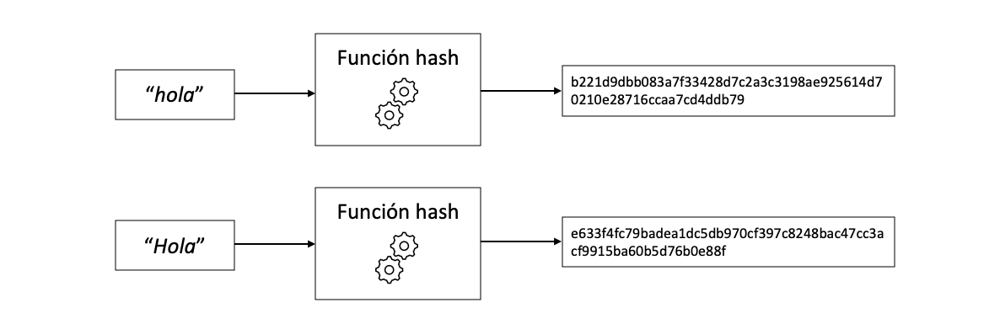

Lo básico
La wikipedia define blockchain como: “una etiqueta que a través de una estructura de datos cuya información se agrupa en conjuntos (bloques) a los que se les añade metainformaciones relativas a otro bloque de la cadena anterior en una línea temporal para hacer un seguimiento seguro a través de grandes cálculos criptográficos”. ¿Pero qué significa todo esto? La traducción literal de “blockchain” al español es: “cadena de bloques”. Pero, ¿qué son estos “bloques”?, ¿y por qué están “encadenados”?.
Cuando hablamos de una cadena de bloques nos referimos a una serie de objetos, o bloques, que contienen una infromación, pero no son un grupo de objetos sin relacción entre ellos, sino que cada objeto hace referencia al anterior. Imaginemos por ejemplo un libro, al final podemos definir un libro como una cadena de paginas o “page-chain”, el libro solo tiene sentido si las paginas están ordenadas correctamente.

En una blockchain cada bloque sería como una pagina de un libro que hace referencia a la pagina anterior. Vale pero esto para qué sirve.
¿Para qué sirve una blockchain?
Para entender la utilidad de una blockchain primero tenemos que entender las diferencias entre una red centralizada y descentralizada. Una red centralizada depende de una persona o entidad central, y el resto de participantes de esa red confian en el nodo central para supervisar el correcto funcionamieto de la red. Un ejemplo de red centralizada es un grupo de amigos que confian en un notario o nodo central para llevar las cuentas del grupo. Cada gasto que hacen se lo comunican al notario y este se encarga de llevar el balance de gastos del grupo de amigos. Este sistema falla si el grupo no puede confiar en el notario para llevar las cuentas. Existen muchos casos en los que no conviene confiar en una persona o entidad para manejar datos, contratos o dinero. Una red descentralizada es una solución a este problema de desconfianza, ya que en una red descentralizada todos los participantes son los encargados de supervisar la red y nadie puede tener más poder que el resto. Por ejemplo en el caso del grupo de amigos todos tendrian una copia de una libreta en la que apuntan los gastos de todos. Por supuesto esto no es tan facil, existen unas tecnicas que permiten que una red descentralizada funcione y esto es para lo que sirve una blockchain.

Una blockchain es una herramienta que nos permite crear una red descentralizada en la que todo el mundo pueda confiar en la veracidad de la información apuntada aunque nadie se fie de nadie. Una blockchain nos permite registrar información inmutable y de forma secuencial.
Imaginemos el caso de un grupo de amigos que quieren llevar las cuentas de su viaje al caribe. Para ello han comprado un cuaderno común y en cada página apuntan cada gasto. Si en el grupo de amigos todos se fian de todos pues genial, pero ¿qué pasa si no se pueden fiar?, uno de ellos podría modificar el gasto en una de las páginas y así robarle dinero al resto. La solución es “descentralizar” el cuaderno, o en otras palabras que cada uno tenga una copia exacta del cuaderno, pero a priori, esto no parece solucionar nada, ¿cómo sabemos si alguién ha modificado su copia del cuaderno? Podriamos solucionar esto haciendo lás páginas inmutables, escribiendo en las páginas con boli por ejemplo. Pero al final siempre se puede arrancar la página y meter una nueva modificada, y en el mundo digital todo se puede modificar sin dejar rastro. Lo que podemos hacer para asegurarnos que nadie ha modificado el cuaderno, es que las paginas esten encadenadas de alguna forma que al modificar un detallito de una pagina el cuaderno deje de tener sentido, esto se puede conseguir haciendo que la infromación de cada página esté codificada de alguna forma con la siguiente página. Por ejemplo, apuntamos en la parte de abajo de cada página la inicial y la cantidad del gasto de la página anterior, y vamos encadenadno estos codigos. De está forma si alguién modifica una página, entonces cualquiera puede comprobar que los codigos que encadenan las páginas no cuadran.

Si Pedro decide modificar la página 2 de su cuaderno y se anota 85€ en vez de 15€ entonces el codigo apuntado en la página 3: "A20P15" no cuadra, deberia ser "A20P85". Así podemos comprobar que alguien ha modificado la página 2 y al verificar el cuaderno de Pedro veriamos que es incorrecto, no cuadra. Así cada vez que añadamos una página nueva al cuaderno verificamos los cuadernos y por votación se eligen los cuadernos de Alicia y Juan para formar parte del “cuaderno oficial”
Pero aquí surgen algunos problemas que no hemos tenido en cuenta. Cualquiera puede modificar una página del cuaderno y modificar todos los códigos sucesivos para validar el cuaderno. De esta forma nadie podria sospechar que se ha modificado el cuaderno y al verificarlo pareceria que está todo en orden. Esto se soluciona haciendo que cueste mucho trabajo modificar el codigo de cada pagina, de forma que quien intente modificar todas las páginas tenga que realizar una cantidad de trabajo prácticamente imposible. Podemos hacer que haya que incluir la solucion a una ecuacion en el codigo de cada pagina. Resolver esta operación matematica cuesta tiempo, esto es lo que comunmente se llama “proof-of-work” o prueba de trabajo, es decir que para añadir una pagina nueva tienes que demostrar que has realizado una cantidad de trabajo que haria imposible modificar todas las páginas en un periodo de tiempo razonable.
Otro problema es que cualquiera puede hacerse pasar por otra persona. Por lo que necesitamos alguna forma de “firmar” las páginas de tal forma que se pueda verificar que cada gasto ha sido anotado por la persona correspondiente.
Aparte de estos problemas, es facil darse cuenta de que el código que encadena las paginas se hace más grande con cada pagina, si tenemos un cuaderno de millones de paginas el codigo se hace demasiado grande. Necesitamos alguna forma de que todas las páginas tengan un código del mismo tamaño
Para resolver estos problemas hacemos uso de la criptografia, y es de aqui de donde surge la palabra “criptomoneda”.
Crypto
La criptografia nos permite cifrar información o firmar datos mediante el uso de algoritmos matematicos. Esto es lo que aporta tanta fiabilidad a las blockchains. Cuando
Función hash
La función hash es una de las herramientas criptograficas más importantes y es imprescindible para crean una blockchain. Aunque el funcionamiento de una función hash puede ser muy complicado el concepto es bastante simple. Se trata de una función que convierte una entrada (la palabla “hola” por ejemplo) en un a salida que parece aleatoria.

Lo que hace a la función hash tan util es que siempre devuelve un resultado del mismo tamaño. Existen muchos tipos de algoritmos hash diferentes, uno de los mas usado es el SHA256, que devuelve 256 bits. Da igual que la entrada de la función sea la letra “a” o el Quijote entero, siempre el resultado son 256 bits. Prueba a experimentar con la función hash:
#| standalone: true
import hashlib as hs
from shiny import *
app_ui = ui.page_fluid(
ui.tags.style(
"""
.app-col {
border: 1px solid white;
border-radius: 5px;
background-color: #ffffff;
padding: 8px;
margin-top: 5px;
margin-bottom: 2px;
}
"""
),
ui.row(
ui.div(
{"class": "app-col"},
ui.p(
ui.input_text("x", "", placeholder="hola"),
),
ui.p(
ui.output_text("txt"),
),
),
align="center",
)
)
def server(input, output, session):
@output
@render.text
def txt():
if len(input.x()) == 0:
hash = hs.sha256(("hola").encode()).hexdigest()
else:
hash = hs.sha256((input.x()).encode()).hexdigest()
return f'{hash}'
app = App(app_ui, server, debug=True)
La función hash es caotica, que quiere decir que un minusculo cambio a la entrada (por ejemplo poner la “h” en mayuscula) provoca un resultado completamente diferente. Es importante distinguir caotico de aleatorio, la función hash no es aleatoria, es determinista, siempre devolverá la misma salida a la misma entrada. Se podría comparar la función hash con el doble péndulo, otro ejemplo de sistema caotico. Cambiar un poquito las condiciones iniciales del doble pendulo provoca resultados de movimiento completamente diferentes. En el ejemplo inferior parece que los dos pendulos son iguales al principio, pero en realidad tienen un cambio despreciable en el angulo inicial, pero este minusculo cambio es suficiente para alterar por completo el resultado.


Otra caracteristica del sistema de doble pendulo es que pasado un tiempo es practicamente imposible deducir el estado inicial del pendulo. De la misma forma, es imposible conocer que entrada a la función hash dará un resultado especifico, o en otras palabras, es imposible hacer la función hash al reves. La unica forma de saber que resultado dará una entrada es realizando la función hash sobre esa entrada.
Si recuerdas los problemas mencionados antes, la función hash resuleve uno de los problemas: codificar la información de cada página (o bloque) de una forma única, determinista y con un tamaño fijo. De esta forma los bloques se “encadenan” porque cada bloque contiene el hash del bloque anterior.

La función hash también nos permite implementar la prueba de trabajo. Computar la función hash requiere una cantidad de tiempo. Como podias ver en la función hash interactiva de antes, no se tarda mucho en calcular, pero si se ejecuta varias veces se empieza a notar. Para implementar la prueba de trabajo en una blockchain podemos, por ejemplo, añadir una variable libre (nonce) a la entrada de la funcion hash y exigir que el hash de cada bloque empieze por "0000". Como es imposible saber que entrada resultara en un hash que comienze por "0000", la unica forma es probar y probar hasta acertar. Este proceso de probar miles de entradas posibles para la función hash requiere computación y tiempo. Por ejemplo, usando la palabra "hola" como entrada del hash, probamos "hola_0", "hola_1", "hola_2"… Al final después de un tiempo resolvemos la prueba de trabajo, su usamos 167537 como la variable libre obtenemos el hash:
hash("hola_167537") = 0000c24a5157df9c08de36972e30404e463b1e76bbb25007395d455b9494ad77